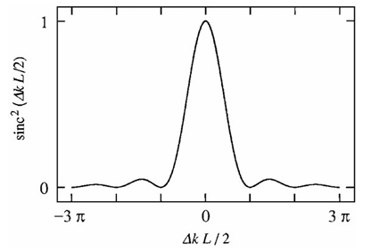
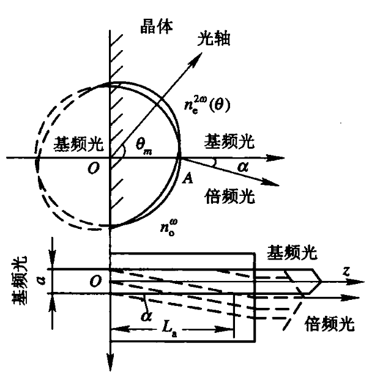

讨论非线性光学相位匹配与相位匹配条件.
这直接决定了某个非线性光学过程的效率，或者说使需要的非线性光学在众多可能发生的非线性光学过程中占优势.
简单起见，假设耦合方程
$$\frac{\mathrm{d}A_3}{\mathrm{d}z}= \frac{2id_{eff}\omega_3^2}{k_3c^2}A_1A_2e^{i\Delta kz}$$右端的输入场振幅\(A_1\)与\(A_2\)为常数.
当处输入场向和频场的转换不太大，这一假设就是成立的.
当\(\Delta k = 0\)时，和频场的振幅\(A_3\)将随\(z\)线性增长，因此其强度随\(z\)二次增长.
这里的强度指\(I\propto|A_3|^2\)
\(\Delta k = 0\)称为完全相位匹配条件.
当完全相位匹配条件满足时，所产生的波与非线性极化保持固定的相位关系，且能最有效地从入射波中提取能量.
为什么？
从微观角度看，完全相位匹配条件满足时，构成材料体系的各个原子偶极子具有合适的相位，从而每个偶极子所辐射出的场在前向方向上相干叠加.
因此，由这些偶极子整体辐射出的总功率，与参与作用的原子数平方成正比.
原子偶极子是指原子内部正、负电荷中心发生相对偏移后形成的电偶极矩.
原子偶极子的相位，是指原子偶极矩随时间振荡时的相位角，表示该原子在振荡周期中“振荡到哪一步了”.
当完全相位匹配条件不被满足时，辐射出的光强将会相对于\(\Delta k = 0\)的情形有所减弱.
这种情况下，非线性介质出口面处的和频场振幅可由积分得到：
$$\begin{align} A_3 &= \int_{0}^{L} \frac{2id_{eff}\omega_3^2}{k_3c^2}A_1A_2e^{i\Delta kz} dz\\ &= \frac{2id_{eff}\omega_3^2}{k_3c^2}A_1A_2\int_{0}^{L} e^{i\Delta kz} dz\\ &= \frac{2id_{eff}\omega_3^2A_1A_2}{k_3c^2}\left(\frac{e^{i\Delta kL}-1}{i\Delta k}\right)\\ \end{align}$$\(\omega_3\)波的强度由时间平均poyting矢量的大小给出，按照场振幅的定义，有：
$$I_i = 2n_i\epsilon_0|A_i|^2,\quad i=1,2,3$$ $$\therefore I_3 = \frac{8n_3\epsilon_0d_{eff}^2\omega_3^4|A_1|^2|A_2|^2}{k_3c^2}\left|\frac{e^{i\Delta kL}-1}{\Delta k}\right|^2$$出现在这个方程中的模平方项可以写成：
$$\begin{align} \left|\frac{e^{i\Delta kL}-1}{\Delta k}\right|^2 &= 2\frac{1-\cos(\Delta kL)}{(\Delta k)^2}\\ &= L^2\frac{\sin^2(\Delta kL/2)}{(\Delta kL)^2}\\ &= L^2\mathrm{sinc}^2\left(\frac{\Delta kL}{2}\right) \end{align}$$[注]\(\mathrm{sinc}(x) = \frac{\sin x}{x}\)
[注]波矢失配的影响已完全包含在相位失配因子中.

可以看到，随着\(|\Delta k|L\)的增大，三波混频过程的效率会下降，且会出现一定程度的振荡行为.
产生这种现象的原因是：若\(L\)大于约\(1/\Delta k\)，输出波就可能与其驱动极化失相，从而功率会从\(\omega_3\)波回流到\(\omega_1\)和\(\omega_2\)波中.
基于此，有时将
$$L_{c} = \frac{2}{\Delta k}$$定义为相互作用的相干积累长度，于是相位失配因子可以写为：
$$\mathrm{sinc}^2\left(\frac{L}{L_c}\right)$$以二次谐波产生过程为例，从辐射的相干叠加观点引入并说明相位匹配的概念.
设基波光电场表达式为：
$$\mathbf{E}_\omega = \mathbf{E}_1\cos(\omega t - k_1z) = \mathbf{E}(\omega)e^{-i\omega t}+c.c.$$其中：
$$E(\omega) = \frac{1}{2}E_1e^{ik_1z}$$ $$k_1 = \frac{2\pi}{\lambda} = \frac{n_1\omega}{c}$$ 相位匹配方法物理条件允许的情况下，优先选择非临界相位匹配（近乎完美）.
使基波与二次谐波有不同的偏振态，通过选择特定光传播方向实现相位匹配的方式.
能保证相位匹配的光传播方向的空间角度.
在二次谐波过程中，如果取基波（波长为\(0.6943\mu m\)）为寻常光偏振，二次谐波（波长为\(0.3472\mu 1\)）为非常光偏振，则基波折射率\(n_o^\omega\)介于二次谐波的两个主折射率\(n_o^{2\omega}\)与\(n_e^{2\omega}\)之间.
这里的“取”是指可以随意控制吗？
首先讨论单轴晶体相位匹配角的计算.
按照入射基波的不同偏振方式，可将临界相位匹配分为两类：
Ⅰ类相位匹配：入射的基波取单一的线偏振光（如o光），产生的二次谐波取另一种状态的线偏振光（如e光）.
Ⅱ类相位匹配：基波取两种偏振态（o光与e光），而二次谐波取单一偏振态（如e光）.
单轴晶体在正常色散区的两类相位匹配方式的相位匹配条件如下表所示：
| 晶体种类 | Ⅰ类相位匹配 | Ⅱ类相位匹配 | ||
| 偏振性质 | 相位匹配条件 | 偏振性质 | 相位匹配条件 | |
| 正单轴晶体 | $$e+e\rightarrow o$$ | $$n_e^\omega(\theta_m) = n_o^{2\omega}$$ | $$o+e\rightarrow o$$ | $$\frac{1}{2}[n_o^\omega + n_e^\omega(\theta_m)] = n_o^{2\omega}$$ |
| 负单轴晶体 | $$o+o\rightarrow e$$ | $$n_o^{\omega} = n_e^{2\omega}(\theta_m)$$ | $$e+o\rightarrow e$$ | $$\frac{1}{2}[n_e^{\omega}(\theta_m) + n_o^{\omega}] = n_e^{2\omega}(\theta_m)$$ |
两类临界相位匹配的相位匹配角\(\theta_m\)可以通过理论进行计算.
e光折射率\(n_e(\theta)\)与方向\(\theta\)的关系为：
$$\frac{1}{n_e^2(\theta)} = \frac{\cos^2\theta}{n_o^2} + \frac{\sin^2\theta}{n_e^2}$$因此对于二次谐波有：
$$\frac{1}{[n_e^{2\omega}]^2} = \frac{\cos^2\theta}{(n_o^{2\omega})^2} + \frac{\sin^2\theta}{(n_e^{2\omega})^2}$$对于负单轴晶体，满足Ⅰ类相位匹配条件时，有：
$$\frac{1}{(n_o^\omega)^2} = \frac{\cos^2\theta_m}{(n_o^{2\omega})^2} + \frac{\sin^2\theta_m}{(n_e^{2\omega})^2}$$解得，负单轴晶体Ⅰ类相位匹配角为：
$$(\theta_m^{Ⅰ})^{负} = \arcsin\left[\left(\frac{n_e^{2\omega}}{n_o^{\omega}}\right)^2\frac{(n_o^{2\omega})^2 - (n_o^\omega)^2}{(n_o^{2\omega})^2 - (n_e^{2\omega})^2}\right]^{1/2}$$同理，正单轴晶体Ⅰ类相位匹配角为：
$$(\theta_m^Ⅰ)^{正} = \arcsin\left[\left(\frac{n_e^\omega}{n_o^{2\omega}}\right)^2\frac{(n_o^{\omega})^2 - (n_o^{2\omega})^2}{(n_o^\omega)^2 - (n_e^\omega)^2}\right]^{1/2}$$正单轴晶体Ⅱ类相位匹配角为：
$$(\theta_m^Ⅱ)^正 = \arcsin\left\{\frac{[n_o^\omega/(2n_o^{2\omega} - n_o^\omega)]^2 - 1}{(n_o^\omega/n_e^\omega)^2-1}\right\}^{1/2}$$负单轴晶体Ⅱ类相位匹配角，无法得到显示解：
$$\left[\frac{\cos^2(\theta_m^Ⅱ)^负}{(n_o^{2\omega})^2} + \frac{\sin^2(\theta_m^Ⅱ)^负}{(n_e^{2\omega})^2}\right]^{-1/2} = \frac{1}{2}\left\{n_o^\omega + \left[\frac{\cos^2(\theta_m^Ⅱ)^负}{(n_o^\omega)^2} + \frac{\sin^2(\theta_m^Ⅱ)^负}{(n_e^\omega)^2}\right]^{-1/2}\right\}$$通过调整光传播方向的角度实现相位匹配时，参与非线性作用的光束选取不同的偏振态，就使得有限孔径内的光束间产生分离.
在二次谐波产生过程中，当晶体内光传播方向与光轴夹角为\(\theta_m\)时，寻常光的波法线方向与光线方向一致，而非常光的波法线方向与光线方向不一致，在整个晶体长度中，使得不同偏振态的基波与二次谐波的光线方向逐渐分离，从而使得转换效率下降.

图中表示了\(n_{2e}(\theta)\)与\(n_{1o}\)折射率曲面在x-z面内的截线，两截线相交于A.
基波（o光）进入晶体后，沿OA（z轴）方向传播.
二次谐波（e光）的波矢方向也是OA方向，但其光线方向沿\(n_{2e}(\theta)\)曲线在A点处的法线方向——\(\alpha\)方向传播，\(\alpha\)为走离角，且：
$$\tan\alpha = \frac{1}{2}(n_o^{\omega})^2[(n_o^{2\omega})^{-2} - (n_e^{2\omega})^{-2}]\sin(2\theta_m)$$[注]大多数晶体的走离角在\(1°\sim 5°\)之间.
通过调节温度实现的相位匹配.
非临界相位匹配对角度偏离不敏感.
如果能够使得相位匹配角\(\theta_m=90°\)，即在垂直于光轴的方向上实现相位匹配，则光束走离效应的限制就可以消除，二次谐波接受角\(\delta\theta\)的限制也可以放宽.
此时，基波的寻常光折射率曲面恰与二次谐波非常光折射率曲面相切.
为实现这种90°相位匹配，可以利用有些晶体（如LiNbO3、KDP等）折射率的双折射量与色散是其温度敏感函数的特点，即\(n_e\)随温度改变量比\(n_o\)随温度改变量大得多，通过适当调节晶体温度，可以实现\(\theta_m = 90°\)的相位匹配.
负单轴晶体Ⅰ类相位匹配的温度带宽：
$$\delta T \approx \left(\frac{\pi c}{\omega L}\right)\left|\frac{\partial}{\partial T}[n_o(\omega) - n_e(2\omega, \theta_m)]\right|^{-1}$$负单轴晶体Ⅱ类相位匹配的温度带宽：
$$\delta T \approx \left(\frac{2\pi c}{\omega L}\right)\left|\frac{\partial}{\partial T}[n_e(\omega,\theta_m)+n_o(\omega)-n_e(2\omega,\theta_m)]\right|^{-1}$$